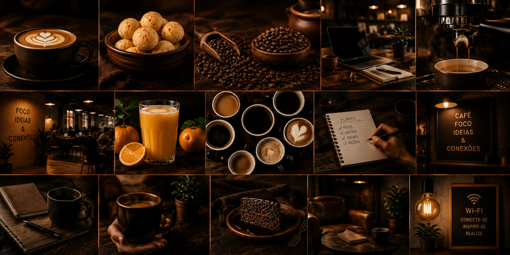

DevCoffee | Sobre nós

A DevCoffee nasceu do desejo de criar um ambiente onde o aroma de um bom café se encontra com a criatividade, a produtividade e momentos de pausa. Idealizada por nossa família, a cafeteria foi pensada para acolher estudantes, profissionais e apaixonados por café que buscam um espaço confortável para trabalhar, estudar ou simplesmente desacelerar.
Aqui, cada xícara é preparada com grãos selecionados e ingredientes de qualidade, acompanhada de um atendimento acolhedor e de um ambiente que convida à permanência. Mais do que servir cafés especiais, queremos proporcionar experiências, conexões e momentos que tornem o seu dia ainda melhor.
Seja para uma reunião, uma sessão de estudos ou uma pausa merecida, a DevCoffee é o lugar perfeito para você se sentir em casa.